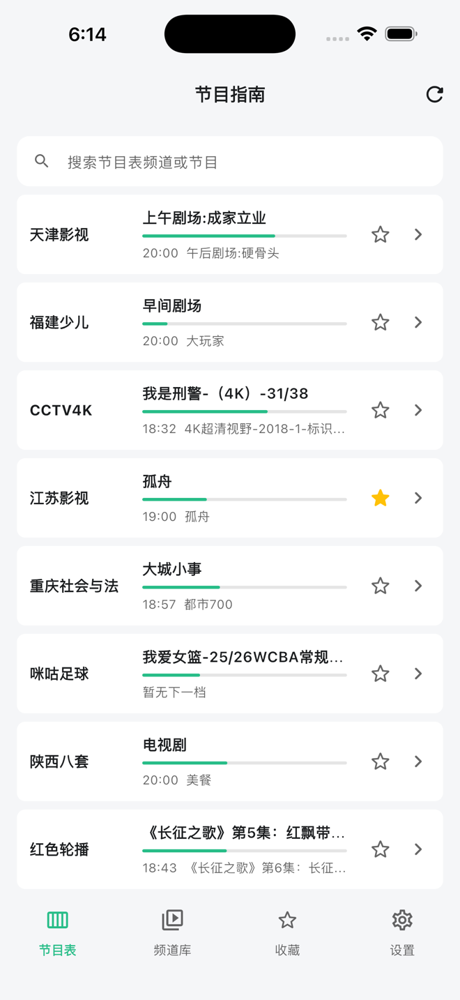

独立节目表
通过网络或本地文件导入 XMLTV，查看频道当前节目、下一档内容和完整日程。
频道清单 · XMLTV 节目表
你的频道清单与节目日程
分别管理自己的频道源与节目表源，查看完整节目日程、设置播出提醒， 并通过线路状态检测维护个人频道清单。

核心功能
两类来源相互独立，需要时再通过频道标识建立播放关联。
通过网络或本地文件导入 XMLTV，查看频道当前节目、下一档内容和完整日程。
为未来节目设置提醒。提醒保存在设备中，并在节目开始时发送本地通知。
导入和管理自己的 M3U 来源，按分组浏览、搜索频道并快速进入播放。
检测频道连接状态、响应时间和内容类型，快速识别成功或失败的线路。
节目表频道与播放频道分别收藏，在同一入口中按类别查看。
支持全屏、后台播放、画中画与 AirPlay，适应手机和大屏观看场景。
节目指南
节目表无需依附频道清单即可使用。搜索频道或节目，查看当前进度与下一档内容，点击频道即可进入按时间排列的完整日程。
使用帮助
打开“设置 > 频道源”，点击右上角添加按钮，输入你有权访问的 M3U 地址。
打开“设置 > 节目表源”，可添加 XMLTV 网络地址，也可从“文件”中选择 XML、XMLTV 或 GZ 文件。
节目表与频道库是独立功能。只有 XMLTV 频道标识与 M3U 中的 tvg-id 匹配时，才会出现播放入口。
请在 iOS“设置 > 通知 > 节目源管家”中允许通知，并确认节目开始时间尚未过去。
这表示应用未能连接到该地址。请检查网络、来源是否有效，以及内容提供方是否限制访问。
本地优先
无需注册账户。频道配置、节目表来源、收藏和提醒保存在设备本地。应用不提供、不聚合，也不会远程下发任何频道或媒体内容。